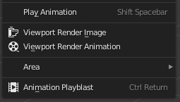

DuBlast
DuBlast is an add-on for Blender which makes it easy to create and play animation playblasts, without having to change any render or output setting.
Usage
3D View ▸ View Menu ▸ Animation Playblast
It adds an Animation Playblast entry in the View 3D > View menu.

It renders the animation with the current viewport settings, temporarily overriding the output settings. By default, it will render the animation with a resolution of 25% of the output dimensions, in the default temp folder for your system. It then automatically opens and plays the animation.
By default, the rendered animation is stored in an MP4 file, with custom settings tweaked for better animation playback and seekability (it is easy to go frame by frame in these files).
You can adjust these and other settings for playblast creation in the Output Settings Tab of the Properties panel.
Tip
You can [Right Click] on the menu item and choose Change Shortcut to assign it a handy keyboard shortcut.
Difference between DuBlast and the native Viewport Render Animation command
| DuBlast | Viewport Render Animation |
|---|---|
| Automatically plays the rendered animation | Needs the user to manually play the animation [Ctrl] + [F11] |
| Has its own output settings, so the user can create playblasts without altering the output settings of the scene | Shares the output settings with the scene/render settings, which means the user has to alter the output settings even if they’re already set for rendering the scene |
| Has custom output format presets for better animation playback and seek | Needs the user to manually set the output to an animator friendly format |
| Scales down the size of the text for the metadata according to the resolution % | Keeps the same size for the text of the metadata, no matter the output resolution, which results in huge texts at lower resolution |
| Atomatically adjusts the rendered animation dimension to fit the MP4 requirements when set to use MP4 | The user has to find a fitting resolution % for the dimensions to have an even number of lines and columns |
| Is able to render Annotations with all Blender versions | Does not render annotations (with Blender > 2.82) |
License
Software
DuBlast Copyright (c) 2020 Nicolas Dufresne
DuBlast is free software; you can redistribute it and/or modify it under the terms of the GNU General Public License as published by the Free Software Foundation; either version 3 of the License, or (at your option) any later version.
DuBlast is distributed in the hope that it will be useful, but WITHOUT ANY WARRANTY; without even the implied warranty of MERCHANTABILITY or FITNESS FOR A PARTICULAR PURPOSE. See the GNU General Public License for more details.
A copy of the GNU General Public License is included in the section entitled “GNU GPLv3”.


Documentation
Copyright (C) 2020 Nicolas Dufresne
Permission is granted to copy, distribute and/or modify this document under the terms of the GNU Free Documentation License, Version 1.3 or any later version published by the Free Software Foundation;
with no Invariant Sections, no Front-Cover Texts, and no Back-Cover Texts.
A copy of the license is included in the section entitled “Documentation License”.